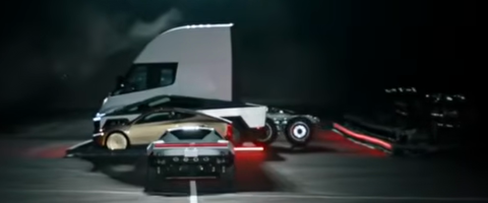
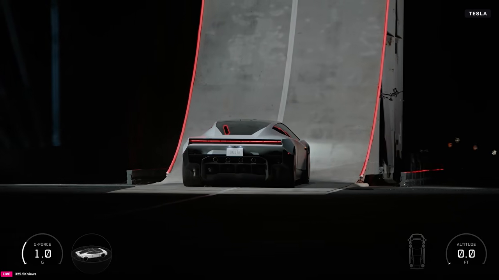

Tesla Roadster wall-launch flip: simulation project
Project log. Started 2026-10-16. Folder: the repository root. Times are seconds in VideoFromSpace eqOfmtTJD1A unless stated. PCMag time = VideoFromSpace time + 61.35 s (corrected 2026-10-16 from the gauge readings; was 61.0 s).
1. Goal and status
Simulate, with high fidelity, the stunt in PCMag video quRC56Z0EJw 1:41–2:00. The car drives up a curved wall, rides the overhang upside down, lets go near the lip, rolls upright in the air, and lands on its thrusters. All dimensions come from measurements of the real setup.
| Step | Status | Output |
|---|---|---|
| Download videos and captions, read transcripts | done | video_files/, video_sources/ |
| Read the broadcast HUD frame by frame | done | data/wall_profile_hud.csv, data/hud_wall_flip.csv, data/hud_telemetry.csv (second stunt) |
| Press reports for specs | done | Section 6 |
| Rebuild the wall geometry | done | sim/wall_flip_sim.py build_wall() |
| On-the-wall physics (speed, suction, power, G) | done | wall_phase() |
| 6-DOF free flight with nozzles, tank, landing | done, self-check passes | flight_phase() |
| 3D replay page | done | replay.html (Three.js r128, reads out/replay_data.js) |
| Broadcast cameras (measured) | done | blender/calib_cameras.py → out/camera_calib.json. Shot A (sim ≤44.69 s): 295 mm tele, 62 m behind the foot, rms 4.1 px. Shot B (sim 44.69 s to end, one continuous shot): tripod at (−76.9, −18.4, 7.7) m, 79 m from the foot, pan/tilt/zoom 43–51 mm per frame, rms 5.6 px. |
| Blender photoreal scene | done | blender/build_scene.py: wall, truss, venue, Roadster, 10 plumes, ground cloud, both cameras. Cycles final out/broadcast_final.mp4 (419 frames, 13.97 s, about 8 h of render); with HUD and sound: out/broadcast_final_hud.mp4. EEVEE drafts: out/broadcast_draft.mp4, out/coverage_draft.mp4. Known gap: in shot B after about 53 s the floor projects about 140 px too low (§9, 2026-10-18). |
2. Which stunt this is
The 2026-10-15 event showed two flying stunts. This project simulates the first one.
| Stunt 1: wall launch (this project) | Stunt 2: "the kickflip" | |
|---|---|---|
| Track | Curved wall that turns past vertical into an upside-down ceiling | Flat straight runway, white centre line, guardrails |
| Action | Climb, let go upside down, 180° roll, thruster landing | Thruster lift-off, 360° roll over 5 parked vehicles, landing |
| VideoFromSpace | 0:00–0:37 slow climb, 0:38–0:58 flip run, 1:00–1:17 replays | 4:26–5:12 |
| PCMag | 0:40–2:30 (flip run 1:41–2:00) | about 4:28–4:56 |
| Will (woW6MWs3hKs) | about 3:27–5:33 | 8:42–9:26 |
Stunt 2 vehicles, confirmed by frames 4:46.8, 4:49.0, 5:09.2 and by TechCrunch: Cybercab, Cybertruck, Semi tractor, Model Y, Model 3. On stage at 5:10: "Tony Hawk would be proud. We call that the kick flip." At 5:15: "I think we could have cleared more than our whole fleet."

3. The wall (measured)
No source gives the wall dimensions. I rebuilt the wall from the HUD of the first, slow climb (0:05.5–0:27). The HUD shows PITCH (deg), ALTITUDE (ft) and DOWNFORCE (kg). With pitch θ and altitude h, the horizontal step is dx = dh / tan θ. Altitude is the height of the car's centre of gravity (CG) above its height when parked.
| Item | Value | Method |
|---|---|---|
| Shape | Entry curve → vertical → overhang → straight upside-down ceiling | Pitch 0° → 90° → 170° |
| Entry curve radius | 8.66 m (CG path) | Circle fit, points 27.6°–76.4° |
| Vertical point | CG altitude 9.38 m (30.5–31.4 ft), 14.26 m of track from the foot | HUD |
| Overhang | 90° → 170° while altitude goes 9.4 → 19.2 m (31.4 → 63.1 ft) | HUD |
| Ceiling | Straight at 170°, altitude 19.2 → 21.1 m (63.1 → 69.1 ft) in the first climb | HUD |
| Top surface height | About 21.6 m (≈71 ft) at the release point | 20.70 m release CG altitude (HUD lag-corrected, §8.1) + about 0.9 m CG-to-surface when upside down (est.) |
| Track length, foot to release | 38.7 m (CG path) | Integrated; sim release_track_s_m |
| Horizontal size | About 20.2 m: 8.6 m from the foot to the vertical face + an overhang that reaches about 11.5 m back past the foot (CG path, including 1.5 m past the release point to the lip) | Integrated; sim wall_horizontal_extent_m |
| Width | About 3.3 m (1.6 car widths) | Frame PCMag 1:44, car width 2.0 m as scale |
| Surface | Grey panels, white centre line, red LED edge strips, steel truss behind | Frames |
Largest geometric uncertainty: the overhang length. The pitch gauge stays at exactly 170° for 6 ft of altitude gain, so 170° may be a gauge limit. If so, the overhang is shorter than 11.5 m. The side camera shows a width/height ratio of 0.41 against 0.86 in the rebuild. These agree only if that camera is about 60° off square-on, which I could not check.
Altitude reference offset. The first climb reached 69.1 ft. After the 0.3 s lag correction, the flip run let go at 67.8 ft. The altitude zero can differ by about 1.3 ft between runs.

3.1 HUD data: first slow climb (wall geometry source)
| video_t | downforce_kg | pitch_deg | altitude_ft |
|---|---|---|---|
| 5.5 | 144 | 1.0 | 0.1 |
| 6.0 | 194 | 1.7 | 0.1 |
| 6.5 | 240 | 3.4 | 0.3 |
| 7.0 | 287 | 7.5 | 0.5 |
| 7.5 | 350 | 15.9 | 1.3 |
| 8.0 | 455 | 27.6 | 3.1 |
| 8.5 | 625 | 40.1 | 6.4 |
| 9.0 | 871 | 52.3 | 10.8 |
| 9.5 | 1202 | 65.4 | 16.5 |
| 10.0 | 1618 | 76.4 | 22.0 |
| 10.5 | 2035 | 84.1 | 26.4 |
| 11.0 | 2589 | 88.2 | 29.1 |
| 11.5 | 3081 | 89.5 | 30.3 |
| 12.0 | 3472 | 89.7 | 30.5 |
| 12.5 | 3785 | 89.9 | 30.7 |
| 13.0 | 4028 | 91.8 | 31.4 |
| 13.5 | 4213 | 97.0 | 33.9 |
| 14.0 | 4349 | 106 | 38.1 |
| 14.5 | 4448 | 117 | 43.5 |
| 15.0 | 4520 | 129 | 49.1 |
| 15.5 | 4574 | 141 | 54.1 |
| 16.0 | 4611 | 153 | 58.1 |
| 16.5 | 4634 | 160 | 60.3 |
| 17.0 | 4653 | 166 | 61.9 |
| 17.5 | 4664 | 170 | 63.1 |
| 18.0 | 4672 | 170 | 64.0 |
| 18.5 | 4679 | 170 | 64.8 |
| 19.0 | 4686 | 170 | 65.6 |
| 19.5 | 4691 | 170 | 66.2 |
| 20.0 | 4695 | 170 | 66.7 |
| 20.5 | 4697 | 170 | 67.0 |
| 21.0 | 4697 | 170 | 67.3 |
| 21.5 | 4697 | 170 | 67.5 |
| 22.0 | 4698 | 170 | 67.8 |
| 22.5 | 4698 | 170 | 68.1 |
| 23.0 | 4699 | 170 | 68.4 |
| 23.5 | 4698 | 170 | 68.6 |
| 24.0 | 4700 | 170 | 68.7 |
| 24.5 | 4698 | 170 | 68.8 |
| 25.0 | 4697 | 170 | 68.9 |
| 25.5 | 4697 | 170 | 69.0 |
| 26.0 | 4698 | 170 | 69.0 |
| 27.0 | 4698 | 170 | 69.1 |
4. The flip run (measured)
| Time (s) | Event | HUD |
|---|---|---|
| 45.65 | Starts from rest at the foot | G 1.0 → 1.1 |
| 46.3 | Starts up the curve | altitude 0.1 ft |
| 49.1 | Vertical | 30.8 ft |
| 52.25 | Lets go of the ceiling near the lip, upside down, at about 8 m/s | G 1.0 → 0.4, 66.6 ft |
| 52.65 | Highest point | 68.0 ft (20.7 m) |
| 52.45–53.35 | 180° roll to upright (on its side at about 52.8; PCMag 1:53.4–1:54.4) | G 0.2–0.5 |
| 52.7–54.0 | Fall 68.0 → 39.3 ft. Matches about 1 g free fall, so the footage is real time | |
| 54.0–54.7 | Main landing burn | G peak 3.3 at 54.4 |
| 54.8–55.2 | Near-hover at about 10 ft | G 1.0–1.1 |
| 55.3–56.3 | Second short drop, then a second burn | G 0.2 → 1.9 |
| ≈56.6 | Touchdown on the pavement | altitude settles at 0.4 ft |
Climb start to touchdown: about 11 s. Time in the air: about 4.3 s. A forward horizontal plume shows during the descent (PCMag 1:54.4–1:54.8), consistent with the 2 front nozzles braking the horizontal speed.

4.1 Speed and loads on the wall (computed)
Speed comes from the HUD altitude mapped onto the rebuilt track (smoothing spline). Loads use mass 2,350 kg and tyre friction 1.1 (both estimates).
| t (s) | Track s (m) | Speed (m/s) | Pitch (°) | G model | G HUD | Min suction (kgf) | Power (kW) |
|---|---|---|---|---|---|---|---|
| 46.8 | 1.42 | 2.26 | 9 | 1.14 | 1.4 | 0 | 23 |
| 47.2 | 2.73 | 4.36 | 18 | 1.37 | 1.6 | 0 | 71 |
| 47.6 | 4.75 | 5.83 | 32 | 1.50 | 1.5 | 0 | 105 |
| 48.0 | 7.24 | 6.70 | 49 | 1.63 | 1.3 | 0 | 175 |
| 48.5 | 10.57 | 6.65 | 70 | 1.48 | 1.0 | 678 | 188 |
| 49.0 | 13.62 | 5.75 | 88 | 1.27 | 0.9 | 1,925 | 164 |
| 49.5 | 16.49 | 5.88 | 106 | 1.16 | 1.0 | 2,143 | 156 |
| 50.0 | 19.05 | 4.87 | 121 | 1.28 | 0.9 | 3,321 | 141 |
| 50.5 | 21.93 | 5.81 | 138 | 0.90 | 0.8 | 2,676 | 107 |
| 51.0 | 25.17 | 6.47 | 155 | 0.84 | 0.9 | 2,655 | 90 |
| 51.5 | 28.96 | 8.31 | 168 | 1.07 | 1.1 | 3,372 | 154 |
| 52.0 | 33.76 | 8.84 | 170 | 1.10 | 1.0 | 3,348 | −99 |
| 52.2 | 35.43 | 8.10 | 170 | 1.00 | 1.0 | 2,687 | 33 |
- Speed: about 6.7 m/s (24 km/h, 15 mph) in the entry curve; about 4.9 m/s (11 mph) on the overhang; about 8–9 m/s (18–20 mph) on the ceiling. The ceiling value is ±2 m/s: one 0.1 ft altitude step is 0.18 m of track at 10° slope. The smoothed peak of 10.5 m/s is in this noisy part.
- Suction, not power, limits the climb. Minimum suction needed: about 3,300 kgf. HUD downforce in the first climb: 4,700 kgf, about 1.4 times that. Peak power: about 190 kW, against more than 1,000 kW available.
- Model G vs HUD G on the wall: differences up to about 0.4 g (largest at 48.5–50.0 s).
4.2 HUD data: flip run
| video_t | g_force | altitude_ft |
|---|---|---|
| 45.0 | 1.0 | 0.0 |
| 45.2 | 1.0 | 0.0 |
| 45.4 | 1.0 | 0.0 |
| 45.6 | 1.0 | 0.0 |
| 45.7 | 1.1 | 0.0 |
| 45.8 | 1.1 | 0.0 |
| 45.9 | 1.1 | 0.0 |
| 46.0 | 1.1 | 0.0 |
| 46.1 | 1.1 | 0.0 |
| 46.2 | 1.1 | 0.0 |
| 46.3 | 1.1 | 0.1 |
| 46.4 | 1.2 | 0.1 |
| 46.5 | 1.2 | 0.1 |
| 46.6 | 1.3 | 0.2 |
| 46.7 | 1.3 | 0.3 |
| 46.8 | 1.4 | 0.4 |
| 46.9 | 1.5 | 0.5 |
| 47.0 | 1.5 | 0.7 |
| 47.1 | 1.5 | 1.0 |
| 47.2 | 1.6 | 1.4 |
| 47.3 | 1.5 | 2.0 |
| 47.4 | 1.6 | 2.5 |
| 47.5 | 1.5 | 3.1 |
| 47.6 | 1.5 | 4.3 |
| 47.7 | 1.5 | 5.2 |
| 47.8 | 1.4 | 6.7 |
| 47.9 | 1.4 | 7.9 |
| 48.0 | 1.3 | 9.2 |
| 48.1 | 1.3 | 11.5 |
| 48.2 | 1.2 | 13.0 |
| 48.3 | 1.1 | 15.2 |
| 48.4 | 1.1 | 16.8 |
| 48.5 | 1.0 | 18.4 |
| 48.6 | 1.0 | 21.1 |
| 48.7 | 0.9 | 23.4 |
| 48.8 | 0.9 | 25.0 |
| 48.9 | 0.9 | 26.7 |
| 49.0 | 0.9 | 28.3 |
| 49.1 | 0.9 | 30.8 |
| 49.2 | 0.9 | 32.4 |
| 49.3 | 0.9 | 34.5 |
| 49.4 | 1.0 | 36.0 |
| 49.5 | 1.0 | 37.5 |
| 49.6 | 1.0 | 40.3 |
| 49.7 | 1.0 | 41.6 |
| 49.8 | 0.9 | 43.0 |
| 49.9 | 0.9 | 44.3 |
| 50.0 | 0.9 | 45.6 |
| 50.1 | 0.9 | 46.9 |
| 50.2 | 0.9 | 48.1 |
| 50.3 | 0.9 | 50.6 |
| 50.4 | 0.9 | 51.7 |
| 50.5 | 0.8 | 52.9 |
| 50.6 | 0.8 | 54.0 |
| 50.7 | 0.8 | 55.0 |
| 50.8 | 0.8 | 57.0 |
| 50.9 | 0.8 | 57.9 |
| 51.0 | 0.9 | 58.7 |
| 51.1 | 1.0 | 59.5 |
| 51.2 | 1.0 | 60.2 |
| 51.3 | 1.0 | 61.4 |
| 51.4 | 1.1 | 62.0 |
| 51.5 | 1.1 | 62.5 |
| 51.6 | 1.1 | 63.0 |
| 51.7 | 1.1 | 63.4 |
| 51.8 | 1.1 | 64.4 |
| 51.9 | 1.1 | 64.8 |
| 52.0 | 1.0 | 65.3 |
| 52.1 | 1.0 | 65.8 |
| 52.2 | 1.0 | 66.2 |
| 52.3 | 0.4 | 67.1 |
| 52.4 | 0.2 | 67.5 |
| 52.5 | 0.2 | 67.8 |
| 52.6 | 0.3 | 68.0 |
| 52.7 | 0.4 | 68.0 |
| 52.8 | 0.4 | 67.5 |
| 52.9 | 0.4 | 67.0 |
| 53.0 | 0.4 | 66.6 |
| 53.1 | 0.3 | 66.2 |
| 53.2 | 0.4 | 65.5 |
| 53.3 | 0.4 | 63.6 |
| 53.4 | 0.3 | 62.2 |
| 53.5 | 0.3 | 60.5 |
| 53.6 | 0.5 | 58.0 |
| 53.7 | 0.5 | 54.8 |
| 53.8 | 0.6 | 47.3 |
| 53.9 | 0.9 | 43.3 |
| 54.0 | 1.7 | 39.3 |
| 54.1 | 2.6 | 35.2 |
| 54.2 | 3.1 | 31.4 |
| 54.3 | 2.7 | 24.4 |
| 54.4 | 3.3 | 21.4 |
| 54.5 | 3.2 | 18.7 |
| 54.6 | 3.0 | 16.5 |
| 54.7 | 2.4 | 14.6 |
| 54.8 | 1.4 | 11.9 |
| 54.9 | 1.1 | 10.9 |
| 55.0 | 1.0 | 10.1 |
| 55.1 | 1.1 | 9.5 |
| 55.2 | 1.1 | 9.0 |
| 55.3 | 0.5 | 8.1 |
| 55.4 | 0.3 | 7.7 |
| 55.5 | 0.2 | 7.4 |
| 55.6 | 0.3 | 6.9 |
| 55.7 | 0.8 | 5.4 |
| 55.8 | 1.4 | 5.2 |
| 55.9 | 1.5 | 4.5 |
| 56.0 | 1.4 | 3.8 |
| 56.1 | 1.2 | 3.1 |
| 56.2 | 1.9 | 2.4 |
| 56.3 | 1.3 | 1.5 |
| 56.4 | 0.7 | 1.1 |
| 56.5 | 0.5 | 0.9 |
| 56.6 | 0.9 | 0.7 |
| 56.7 | 1.2 | 0.5 |
| 56.8 | 1.0 | 0.4 |
| 56.9 | 1.0 | 0.4 |
| 57.0 | 1.1 | 0.4 |
| 57.1 | 1.0 | 0.4 |
| 57.2 | 1.1 | 0.4 |
5. The car
| Item | Value | Source |
|---|---|---|
| Variants | Performance, Thrust, Rocket (Top Gear also names a base Roadster). The demo car has the Rocket's 10 nozzles; the Rocket seats one. | Electrek, TechCrunch, Top Gear |
| Wheelbase | 2,825 mm | Top Gear (Tesla engineer) |
| Width | 2.0 m | Top Gear |
| Tyres | 295/30 front, 335/30 rear; 20 in / 21 in wheels | Top Gear |
| Length, height | Not published. Estimates used: 4.7 m, 1.15 m | est. |
| Mass | Base target under 1,700 kg (Top Gear). "4000+ pound" = 1,815+ kg (Marques Brownlee, not Tesla). Demo car estimate about 2,350 kg with gas: 4,700 kg HUD downforce ÷ "up to 2 G". | Top Gear, TechCrunch, est. |
| Drive | 2 rear motors, rear-wheel drive, over 1 MW (about 1,340 bhp, about 960 lb-ft), 800–1,000 V | Top Gear |
| Suction | Fans under the car, deployable side/front/rear skirts, "up to 2 G", holds the car upside down even when stationary | Event, Electrek |
| Nozzles | 10: 4 rear main ("over 80 kN" together), 4 corner lift, 2 front for yaw. Force per nozzle not published. | Event, Top Gear, TechCrunch |
| Gas tanks | 2 carbon-wrapped pressure vessels, 600 L total, about 250 kg of gas. Thrust version: 200 L at about 10,000 psi (≈690 bar); Rocket adds 400 L. Nitrogen (Top Gear) vs air (event). One fill = one use; fill takes 2–6 h. | Event, Top Gear |
| Other | Autonomous for the demo, no driver. 0–60 mph 0.81 s on video. Production 2028, Texas. | Event, Tech-Insider |
6. Venue and press
SpaceX test facility in Texas: McGregor (Tech-Insider), "outside Waco" (TechCrunch); McGregor is about 20 miles from Waco. Flat paved landing area.
- Electrek
- TechCrunch
- CBS News
- Tech-Insider
- Videos: PCMag, VideoFromSpace, Will, Top Gear, BIZ
7. Simulation model
7.1 Model parameters
| Parameter | Value | Basis |
|---|---|---|
| Dry mass + gas | 2,100 + 250 kg | Section 5 estimate |
| Tank | 0.600 m³, N₂, 293 K start, Abel-Noble co-volume 8.0e-4 m³/kg → about 544 bar at 250 kg | Co-volume fitted to N₂ compressibility 1.65 at 690 bar |
| Nozzle thrust | F = Cf·A·P_tank·valve; mass flow = F / (Cf·c*); Cf = 1.6; exhaust speed ≈ 690 m/s at 293 K | Standard cold-gas relations; Cf est. |
| Nozzle limits at full tank | Rear 4 × 20 kN, corner lift 4 × 35 kN, front 2 × 15 kN (aimed forward, 20° outward) | 80 kN stated for the rear; lift and front sized so the observed burns are possible (section 8.1) |
| Tank blowdown | Polytropic, n = 1.25 | est.; sensitivity in 8.1 |
| HUD altitude lag | 0.30 s | Free-fall fit, section 8.1 |
| Inertia | 650 / 2,900 / 3,200 kg·m² (roll / pitch / yaw) | est. |
| CG height | 0.45 m | est. |
| Suspension | 80 kN/m, 6 kN·s/m per wheel | est. |
| Drag areas | 0.7 / 2.0 / 8.0 m² (body x / y / z) | est. |
| Valve lag | 20 ms | est. |
7.2 Method
- On the wall: motion follows the HUD altitude mapped onto the rebuilt track. Physics gives tyre force, minimum suction, power and accelerometer G.
- In the air: 6-DOF rigid body from the release state. A flight controller (the demo was autonomous) lets the car fall free until 53.95 s, then tracks the lag-corrected HUD altitude. It also runs the 180° roll schedule and brakes the horizontal speed. A bounded least-squares allocator sets the 10 valves. The tank pressure and temperature fall as gas leaves.
- Checks: apex within 1.5 ft, touchdown within 0.4 s, altitude RMSE under 2.5 ft (section 8.1), lands upright within 10°, gas used under 250 kg, no contact with the wall or with the ground except the wheels.
8. Results
Run: python sim/wall_flip_sim.py (about 5 s). Self-check passed on 2026-10-18 with the current code (half-roll window 52.35/53.10 s). Output: out/replay_data.js. python check.py compares this table with a fresh run.
| Quantity | Simulation | Observed (HUD) |
|---|---|---|
| Apex | 68.5 ft at 52.39 s | 68.0 ft at 52.30 s (lag-corrected) |
| Touchdown | 56.17 s | ≈56.3 s (lag-corrected) |
| Altitude RMSE in flight | 2.09 ft | — |
| G RMSE: wall / flight | 0.26 g / 0.60 g | — |
| Peak G in flight | 3.78 g (wheel touchdown) | 3.3 g |
| Release speed, pitch | 8.14 m/s along the ceiling, 170° | — |
| Gas used / left | 191.8 kg / 58.2 kg of 250 kg | — |
| Tank pressure | 544 → 58.6 bar | — |
| Landing point | x = −21.5 m (21.5 m behind the foot line, 11.0 m past the release point at x = −10.4 m), upright | Not measurable from the frames |
| Closest approach to the wall after release | 0.50 m | — |
8.1 Findings from the model
- The HUD altitude lags by about 0.3 s. A free-fall fit to 52.2–53.95 s gives a lag of 0.34 s and a release vertical speed of 1.33 m/s (rms 1.26 ft). That vertical speed matches 8 m/s along a 170° ceiling (8.1 × sin 10° = 1.41 m/s). With the lag, the 170° ceiling and the release data agree. The stunt-2 HUD showed a similar lag (about 0.2 s). The sim uses 0.30 s. The release CG altitude becomes 20.70 m and the rebuilt wall extends 20.2 m horizontally.
- The car is in free fall from release to the burn. Thrust before 53.95 s is only for the roll and braking.
- Gas is the limit. The observed burns need about 192 kg of the 250 kg. Pressure falls from 544 to 59 bar, so late in the landing the lift nozzles run at their pressure limit. To give 3.3 g at 54.4 s and hover at the end, each corner nozzle must be sized for about 35 kN at full pressure (140 kN total). This is a derived value, not a published one.
- The tank's heat exchange changes the touchdown time. Polytropic exponent n = 1.4 (no wall heat): touchdown 55.38 s, check fails. n = 1.25: 56.17 s. n = 1.1: 56.25 s. The sim uses n = 1.25, the middle of the 1.2–1.3 range for fast pressure-vessel blowdown.
- Suction peak is a noise artifact. The model's highest suction need is 5,003 kgf at 51.4 s, above the 4,700 kgf seen in the first climb. At that point the track is at 170°, where each 0.1 ft altitude step is 0.18 m of travel, so the computed speed (10.1 m/s) and acceleration (10.6 m/s²) are noise. The typical need on the overhang is about 3,300 kgf.
- Tolerance change: the altitude RMSE check was first set at 2.0 ft. I changed it to 2.5 ft because the pure free-fall fit to the HUD already leaves 1.26 ft. The result is 2.09 ft.
- Note: the speed/load table in 4.1 was computed before the lag correction. Its times are 0.3 s early relative to the current model.
9. Change log
- 2026-10-16: videos downloaded; stunt 2 HUD read (
data/hud_telemetry.csv); user chose stunt 1 (PCMag 1:41–2:00); wall HUD read; wall rebuilt; on-the-wall physics run; press specs collected; this page created. - 2026-10-16: flight phase run. Found HUD altitude lag (0.30 s), added free-fall mode before the burn, polytropic tank (n = 1.25), resized nozzles (corner lift 35 kN, front 15 kN aimed 20° outward). Self-check passes.
- 2026-10-16:
replay.htmlbuilt: wall ribbon fromSIM.wall(3.3 m wide), car box 4.7 × 2.0 × 1.15 m with wheels, 10 nozzle plumes scaled by thrust fraction, HUD gauges (G, altitude ft, gas kg, pressure bar), play/pause/scrub/speed, Broadcast/Chase/Free cameras. Checked in Chrome at 44.0, 48.8, 51.2, 53.8, 54.8, 57.5 s: poses match the sim, no console errors. - 2026-10-16: The owner asked for a photorealistic version. Decided: Blender-rendered MP4 (EEVEE drafts, then Cycles 1280x720 final), car modelled in Blender with Python from the reference frames. Plan in
HANDOFF.md. - 2026-10-16: Blender steps 1–4. Time offset corrected: PCMag = VideoFromSpace + 61.35 s, not 61.0 s. Evidence: the ALTITUDE gauge reads 57.0 ft in PCMag 112.2 s (CSV time 50.8 s) and 60.8 ft in PCMag 112.55 s (CSV about 51.25 s); VideoFromSpace at 51.2 s reads 60.2 ft, equal to the CSV. Still to check:
ROLL_T0/T1in the sim came from PCMag times and may carry the same 0.35 s error. Scene detection (ffmpeg) finds one cut in the run, at PCMag 106.04 s = sim 44.69 s. Shot B has no cut to the end: the operator zooms in slowly (46→51 mm, 48.45→50.85 s), then pans left for the fall. Both cameras were solved from wall-edge pixels read off PCMag frames (frames/ref/pcmag_*.png). Distance and focal length trade off (65–116 m fit nearly equally well); the lip corners fix the distance. Check of the sim against shot B: up to the release, the sim car projects within 15 px of the real car. After the release, the real car is left of the sim car on screen by 51 px (52.25 s), 104 px (53.45 s) and 303 px (54.45 s). One camera cannot tell if the real car went farther in −x, sideways in +y, or higher; a second camera angle is needed. At 52.25 s the real car hangs past the lip of the wall, so the overhang may be longer than modelled. Blender scene, EEVEE stills and the comparison sheet made. - 2026-10-16: Half-roll window re-measured on the VideoFromSpace axis (51.9–53.9 s at 10 fps,
frames/roll/eq_51.9-53.9.jpg): front jet fires 52.2 s, car leaves the lip 52.3 s, on its side 52.6–52.7 s, upright with lift jets 53.1 s.ROLL_T0/T1changed from 52.45/53.35 to 52.35/53.10 (the owner approved). Sim rerun, self-check passes: altitude rms 2.04 → 2.09 ft, gas used 187.8 → 191.8 kg, peak flight G 3.90 → 3.78, touchdown 56.19 → 56.17 s. - 2026-10-16: Coverage cameras added to
blender/build_scene.py(the owner asked for several angles): C low wide at the foot, D on the truss above the lip, E on the car's right flank, F chase drone (0.6 s lag), G low across the landing zone. Two cut lists:broadcast(the two measured cameras) andcoverage(7 real-time shots plus a 0.4× replay of the release). Ground cloud rebuilt as 22 puffs born where the lift jets reach the floor. Car model moved toblender/roadster.py. - 2026-10-16/17: Triangulation started (
blender/triangulate.py, not finished). Second view = slow-motion replay R1 (VideoFromSpace eq 68.85–79.7, ramped speed). Frames:frames/tri/r1/(27, eq 69.94–76.44, every 0.25 s) andframes/tri/b/(21, PCMag 113.6–117.6, every 0.2 s). Wall edges and lip corners read automatically; car centres read by eye. R1 camera: tripod about (−126.5, −7.5, 10.5) m, lens 156–177 mm (slow zoom in), wall-edge rms 1–3 px in most frames, 8–16 px where the car or the cloud touches an edge. Distance is weak: tripod x from −90 to −144 m fits about equally (tele lens). Shot B refit per frame: rms 2–4 px, except 115.8 (wrong local minimum; roll now limited to ±0.12 rad, not rerun). Conditioning: B and R1 sight lines meet at the car at about 13°; 5 px in B gives about 0.8 m of depth error, against a 51–303 px miss to explain. Side finding: in every B frame the model lip projects 5–11 px left of the detected lip, a hint that the modelled overhang is short. Not done: the trajectory fit (x(t), y(t), R1 frame times; z from the HUD).out/triangulation.jsonholds results from a run with a bug and is not valid. The sim is not changed. - 2026-10-17 (the owner approved an autonomous run): Overhang switch:
python sim/wall_flip_sim.py shortputs the lip at the release point (LIP_EXT0 m, wall extent 18.70 m, self-check passes). The defaulthudkeeps 1.5 m to the lip (20.18 m). Evidence: (1) a 170° gauge clamp makes the ceiling longer, not shorter, because a true pitch above 170° needs more run per foot of climb; (2) shot B wall-edge median rms is 3.09 / 3.23 / 3.61 / 3.81 / 4.93 px for the ceiling +1.5 / 0 / −1 / −2 / −3 m, so the wall edges do not favour a short ceiling; (3) at PCMag 113.6 s (= 52.25 s) the car is at or past the lip in shot B, not 1.5 m before it. Items (2) and (3) disagree. Triangulation (item 3): the gate failed. Gate set before the results: car rms ≤ 5 px in R1 and in B. Best result: R1 76 px, B 50 px. The sim is not refitted and the planar y = 0 flight model stays. Causes found: wrong-minimum camera poses (R1 70.19 s: 502 px; R1 73.94–74.44 s: about 138 px; B 116.4 s: edge rms 22.5 px), and poor conditioning. Camera B is 7.7 m high and about 60 m away, so a 1 m height error moves the range by about 5 m, and the range is undefined when the car is at 7.7 m. Fixes kept inblender/triangulate.py: B edge rows below a 40-row gap are dropped (smoke under the wall gave B 115.8 s an edge rms of 95 px; now 2.3 px); R1 frame times are fixed by events (69.94→52.25, 71.94→53.10 upright, 74.69→54.00 cloud on the floor); z is free with a 0.5 m HUD prior;CAR_B[116.4]added. Timing:solve_r1254 s is the slow stage,solve_traj9 s. A time-shift test of the sim path (0–0.5 s) did not reduce the residuals (B rms 168–184 px). Image findings that do not need the fit: the car drifts to +y (screen left in B and in R1); shot B shows the lift jets at PCMag 114.8 s (= 53.45 s), 0.5 s before the sim'sT_BURN53.95 s from the HUD G gauge.out/triangulation.jsonis still not valid. Look pass: camera A exposure −1 stop (EXPOSURE; wall top and floor then match pcmag_105.0); floor specular 0 (the floor read grey from sheen, not from albedo); haze 0.00015; volume tiles 2 px; ground-cloud puffs larger (radius 4–7 m, reach 4–14 m), some puffs taller. Moving the floods to the sides was tried and reverted, because it darkened the wall in shot B. Cycles:--final(with--cycles-device OPTIXafter--). Cycles crashed (access violation) on jet volumes scaled to 0.001; off jets are now hidden. Test times at 64 samples: 20 s (shot A), 70 s (54.45 s), 7.6 min (55.95 s, dense cloud). Sound: 8 ElevenLabs SFX takes (4 prompts × 2), 400.8 credits; mix inout/sfx/mix.py: jet loudness follows the sim nozzle command, motor loudness follows the wall speed. Renders:out/coverage_draft.mp4andout/broadcast_draft.mp4(EEVEE);out/broadcast_draft_hud.mp4adds the HUD (sim values with the 0.30 s gauge lag) and the sound bed (blender/hud_mux.py). The Cycles final of the broadcast cut started at about 05:45 (64 samples, OptiX, estimated 15–20 h, chainout/logs/render_all.sh). - 2026-10-17: Published to github.com/az9713/roadster-simulation with GitHub Pages (
index.htmlvideo page, README with source videos and a poster link).DEVELOPMENT-JOURNEY.htmladded: the full story from the first prompt, with errors, decisions and unknown unknowns. The Cycles final stopped at about 08:12 after frame 341 of 420, with no error in the log; cause unknown; the chain is resumable. - 2026-10-17:
PHYSICS.htmladded at the owner's request: the complete theory with derivations (wall rebuild, wall loads, 6-DOF rigid body and quaternions, Abel-Noble gas and polytropic blowdown, choked nozzle flow, controller, bounded least-squares allocator, HUD lag fit), every parameter marked measured / published / derived / est., and the results and sensitivity against the HUD. KaTeX 0.16.9 from cdnjs. Six charts inout/physics/, made byout/physics/make_charts.pyfrom the sim module. Rerun of the sensitivity with the current code: n = 1.4 touchdown 55.38 s (fails), n = 1.25 56.17 s, n = 1.1 56.25 s; first-guess nozzles (lift 20 kN, front 8 kN) 54.78 s with a 9.81 g impact (fails);shortoverhang passes (2.19 ft). The free-fall lag fit was reproduced: 0.337 s, 1.329 m/s, rms 1.258 ft. The §8 table above still shows the first passing run (before the roll-window change). - 2026-10-17: PHYSICS.html Part 4: the flip added at the owner's request (51.31–53.95 s, report only; the sim and its self-check are unchanged). One equation set for ceiling, release, roll and fall; four proved propositions; six figures by
out/physics/flip.py. Findings: (1) the sim's roll lags its own reference by about 0.1 s (90° at 52.80 s against 52.725 s; video on its side 52.6–52.7 s) and overshoots upright by 34.3° at 53.18 s, because the attitude law has no feed-forward; (2) push-only lift jets cannot make a pure roll moment, so the half-roll pushes the car toward +y: 4,038 N·s, 1.72 m/s open loop, 2.11 m by the burn, the same sign as the observed drift; the controller cancels it (max |y| 0.333 m); (3) the HUD G of 0.2–0.4 g during the roll is not consistent with a jet-only roll unless I_xx ≤ 351 kg·m² (estimate 650) or the gauge is filtered; (4) aero terms on the sim path are below 0.5% of the jet roll moment (damping 102/119 N·m), drag at most 4.03% of the weight; (5) in thehudvariant the RR exhaust points at the ceiling from 52.40 to 52.56 s (scale: 769 N·s, 12.8% of a half-roll's angular impulse), inshortfor 0.02 s; (6) the spline puts the release CG 0.392 m past the nominal release point, so only 1.108 m ofhudceiling is ahead. - 2026-10-18: Cycles final stop, diagnosis (cause not proven). Run 2 (PID 20012, started 10:26) saved frame 409 at 15:15:04 and exited with code 1 at 15:18:43, about 3.6 min into frame 410 (normal frame time about 4.7 min). Run 1 stopped at frame 341 near 08:12 with no "final exit" line, so its bash parent also stopped. Evidence: no Blender crash file; the Windows System and Application logs have no event from 15:10 to 15:25 (no GPU driver reset 4101, no application error 1000, no resource-exhaustion 2004); the PC did not enter standby until 16:05 (lid). Both runs were started with
Start-Process(hidden, detached), so a Claude Code session exit does not explain them. Different stop frames (342, 410) make a frame-specific scene fault unlikely. Exit code 1 with no log text matches an external forced stop (Task Manager "End task" andtaskkill /Fboth use code 1). No transcript in this project shows a kill of Blender. 409 of 419 frames were done; 10 were left. - 2026-10-18: Cycles final done. Run 3 (started 07:10:52 at the owner's request, resumed at frame 410) rendered the last 10 frames at about 4.7 min each and ended "final exit 0".
out/broadcast_final.mp4: 1280x720, 30 fps, 419 frames, 13.97 s, 1.38 MB, written 07:58:23 (same frame count as the EEVEE draft). Total Cycles render time over the three runs: about 2 h 27 min + 4 h 48 min + 47 min (about 8 h). Compared with the EEVEE draft: luma PSNR 39.6-42.0 dB per second for 1-9 s (near identical) and 22.2-22.6 dB for 11-13 s, where the EEVEE cloud is thin and dithered and the Cycles cloud is dense and smooth. Againstframes/ref/pcmag_117.3.pngthe Cycles cloud is closer (dense white billows, car mostly hidden), so the owner kept the Cycles final as rendered. Remaining gap: our cloud is greyer, without the pink/red tint of the venue lights. HUD mux and frame checks not done yet. - 2026-10-18: HUD on the Cycles final.
python blender/hud_mux.py out/broadcast_final.mp4 out/broadcast_final_hud.mp4(24 s): 1280x720, 419 video frames, 13.97 s, AAC sound bed, 1.81 MB. Gauge check againstframes/ref/(sim value with the 0.30 s lag / real broadcast gauge): 44.0 s 1.0 G, 0.0 ft / 1.0 G, 0.0 ft; 54.45 s 3.2 G, 19.2 ft / 3.2 G, 18.7 ft; 55.95 s 0.8 G, 3.8 ft / 1.4 G, 3.6 ft. The largest gauge difference is 0.6 G at 55.95 s (landing thrust). Finding, shot B framing: at 54.45 s (=pcmag_115.8.png, a camera B calibration frame) the render matches the fitted points (lip at about (975, 180) px, left wall edge at x about 1100 px for y 560 px), but the wall foot and floor lights are at y about 715 px against about 578 px in the real frame (about 140 px low). The calibration points for that frame cover only y 170-560 px, so nothing in the fit holds the floor. The same offset is in the 2026-10-16 stillout/compare/cmp_54.45.jpg; inout/compare/stills_vs_pcmag.jpgthe foot matches within about 10 px at 48.45 s and 50.85 s and moves low at 53.45 s and 54.45 s. The calibration also puts the 115.8 car ray at z 3.89 m at x = -177 m (car_from_videoinout/camera_calib.json), which is not physical. So the late camera B poses are not constrained at the floor; this can be one cause of the B car residuals in the failed triangulation gate. Not fixed: a fix needs floor points inblender/calib_cameras.pyand a re-render of shot B. - 2026-10-18: Claim checker (task 3a, run without the owner in the loop).
claims.csvlists every number in PROJECT.html, PHYSICS.html and README.md: 2,297 rows before this entry (the numbers in this change log add more rows;python check.py --inventoryprints the current count). 203 rows have a tool that prints the value and are checked (178 model-only, 25 HUD; this includes the two HUD tables of §3.1 and §4.2, checked cell by cell againstdata/*.csv). 284 rows are labels (dates, section and figure numbers, versions). 479 rows describe the past on purpose (this change log, the §4.1 table computed before the lag correction, quoted old runs in PHYSICS.html) and are not compared. 1,331 rows have no tool that prints them (inputs, press values, video readings); their evidence class is footage 484, HUD 443 or none 1,167 over all unchecked rows.check.pyrerunssim/wall_flip_sim.py(defaulthud),out/physics/make_charts.pyandout/physics/flip.pyand compares each checked row within half a unit of the last digit shown (exhaust speed: 5 m/s). It exits 1 on a mismatch. Full mode takes 24 s. Proof on the git history:python check.py --fast --rev 099640dflags 14 numbers: the §8 table (touchdown 56.19, altitude RMSE 2.04, flight G RMSE 0.58, peak G 3.9, gas 187.8 / 62.2 kg, end pressure 64 bar, clearance 0.59 m) and §8.1 (188 kg, 64 bar, touchdown 55.75 / 56.19 / 56.27 s for n = 1.4 / 1.25 / 1.1, RMSE 2.04 ft). I changed them to the fresh values (56.17 s, 2.09 ft, 0.60 g, 3.78 g, 191.8 / 58.2 kg, 58.6 bar, 0.50 m; 192 kg, 59 bar, 55.38 / 56.17 / 56.25 s). After the fix: 203 agree, 0 do not. PHYSICS.html: the note "PROJECT.html §8 still lists the first passing run" now says "until 2026-10-18". README: the Cycles final is in the repository (it said "not yet"). Hook: thesetup-pre-commitskill installs Husky, lint-staged and Prettier; this repo has no Node and nopackage.json, and Prettier would reformat the HTML docs, so I did not use it.python check.py --install-hookwrites.git/hooks/pre-commit=python check.py --fast(4.3 s): it reruns only the sim, takes the other two outputs fromout/check_outputs.json, and stops if a script or data file changed since the last full run. It checks the working-tree docs, and it fails ifout/replay_data.jsdiffers from the git index after the sim rerun. Runpython check.py(full) by hand after a change to a script. replay.html "Video check": the sim car projected onto the 15 shot-B and 27 R1 frames through cached cameras (blender/cache_cameras.py→out/cameras_tri.json: B fromsolve_b, R1 fromsolve_r1, 4 s), data fromblender/reproj.py→out/reproj.js. Sim car against the by-eye car: B rms 268.3 px (median 143.9, max 536.0); R1 rms 216.4 px (median 109.3, max 557.9 at 70.19 s, a wrong-minimum camera). R1 frames after 74.69 s use the last anchor slope (0.327) for their time (marked "extrapolated"); the R1 69.94 s camera fit uses the sim car (marked). Checked in the browser: panel draws, no console errors. - 2026-10-18: Task 3b, first probe: car tracker in shot B. Result: FAIL. Task 3c (combined fit) not run, per the rule. Gate set before the run: the tracker follows the car to PCMag 116.4 s and the median distance to
CAR_Bis ≤ about 10 px. Tools:import cv2works (OpenCV 4.13.0, no CSRT in the installed build);yt-dlpis on PATH. I decoded the 108 frames of the local 720pvideo_files/quRC56Z0EJw.mp4from 113.2 s (29.97 fps). The 15 stillsframes/tri/b/pc_113.6…116.4.pngare decoded frames 12, 18, …, 96 exactly (mean absolute difference 0.00), so the time match is exact. Each tracker started atCAR_B[113.6]= (610, 66) and ran frame by frame. Median / max distance toCAR_Bover the 14 later stamps: MIL 140×90 px box 23.6 / 40.0 px (40.0 at 116.4); CSRT 140×90 22.7 / 76.0 px (73.4 at 116.4); CSRT 100×84 24.6 / 74.4 px; CSRT 80×76 lost the car (298.8 px); MIL 100×84 45.3 / 79.1 px; NCC template 47.2–51.3 px. CSRT came fromopencv-contrib-python-headless4.13.0.92 installed into the session scratch folder only (the global Python is unchanged). Why it fails: the trackers keep a box of fixed aspect, but the car silhouette changes from about 75 × 75 px end-on at 113.6 s to about 150 px wide side-on from 115.6 s, and the cloud covers its lower body from 115.4 s. The box slides to the nose: MIL x is 17–40 px left ofCAR_Bfrom 114.8 s, while its y stays within 4 px ofCAR_Bin every frame. A contact sheet shows theCAR_Bcrosses on the middle of the car, so the error is in the trackers, not inCAR_B. I did not download the 1080p source: the failure comes from the box shape, not from the resolution. What would be needed for c: a tracker that gives the silhouette centre (segmentation per frame, or a scale- and aspect-adaptive tracker with a model file), then the same gate again. - 2026-10-18: Owner decision: the triangulation line is closed. The planar y = 0 flight model stays. Reasons: every attempt to measure the car path after release from the video missed the gate (car rms ≤ 5 px in R1 and B, no frame > 15 px): hand-read triangulation (R1 76 px, B 50 px), a 0–0.5 s time shift of the sim path (B 168–184 px), and five trackers in task 3b (best median 22.7 px against the 10 px probe gate). The shot B floor offset (about 140 px after 53 s) is a second error source that a better tracker does not remove. No sim refit; task 3c will not run. Kept for reference:
blender/triangulate.py, thereplay.htmlvideo-check panel andcheck.py.out/triangulation.jsonstays invalid. - 2026-10-18: Owner decisions after the image findings. (1) The render default stays
hud(LIP_EXT1.5, extent 20.18 m);shortstays a switch. Evidence against each other: shot B wall-edge median rms 3.09 px forhudagainst 3.23 px forshort; the PCMag 113.6 s image shows the car at or past the lip at release, which favoursshort. (2) No roll feed-forward (M_b += INERTIA @ dw_ref): the sim keeps its 34.3° overshoot past upright at 53.18 s, as documented in PHYSICS.html Part 4. (3) Next task: reduce the claims inclaims.csvthat no tool prints. - 2026-10-18: Claims with no tool: 1,331 → 752. New rules in
check.py(no change to the sim or its output). (1) A fourth output,par: 50 sim input constants (masses, tank, inertia, car size, suspension, drag areas, valve lag, time constants, nozzle positions and thrusts), read by importingsim/wall_flip_sim.py. A doc number pins to one only when the value is equal (not rounded), a word is shared, and the unit follows the number; 104 rows pin this way. (2) A value with 4 or more significant digits pins to an output number of the same value without a shared word, except the time stamps that start theflip.pygrid lines. The number reader now also takes the KaTeX thousands separator{,}(5 numbers such as 26{,}359 N were split in two). Checked rows: 203 → 400, all agree (full and--fast). (3) Named labels for numbers that name something: formula constants and indices (integers ≤ 10 inside a formula) 223, code line numbers afterfile.py:76, section numbers 36. (4) Numbers in PROJECT.html §2, §5, §6 and the README "Secondary sources" table that no tool prints: "cited source (press or video)", 47. Proofs:python check.py --fast --rev 099640dstill flags the 14 stale numbers (plus 2 anchors of text written later); a test edit of the tyre friction in PHYSICS.html (1.1 → 1.2) is flagged againstMU. Left: 752 rows, evidence none 388, HUD 196, footage 168. They are readings of the HUD and the video (inputs) and derived numbers in the worked examples that no script prints. Not done: a reader forout/camera_calib.json(about 6 numbers); print lines inflip.py/make_charts.pyfor the worked-example numbers.